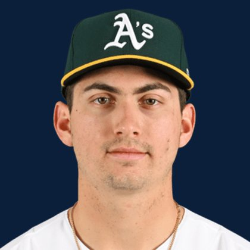

BASEBALLKEEP
Dynasty · Redraft · Diamond
Player File · OF ATH

Tyler Soderstrom
#21 · OF · Athletics · age 24 · B/T LR · 6' 2" / 200 lbs · MLB debut 2023 · Turlock, USA
Keep avg43.74
# Boards23
BK Value3,113
Spread32–114
Hitting
| Year | G | AB | R | H | 2B | HR | RBI | SB | BB | SO | AVG | OBP | SLG | OPS |
|---|---|---|---|---|---|---|---|---|---|---|---|---|---|---|
| 2026 | 109 | 396 | 58 | 97 | 27 | 19 | 56 | 2 | 53 | 91 | .245 | .338 | .472 | .810 |
| 2025 | 158 | 561 | 75 | 155 | 34 | 25 | 93 | 8 | 55 | 141 | .276 | .346 | .474 | .820 |
The Keep#42BK 3,113
The Lineup#32BK 3,856
Redraft#42BK 3,113
The 2026 line
Keep #42 · avg 43.74 · 23 boards · .245 / 19 HR / 2 SB / .810 OPS
Minus
- Board spread 32–114 (82 ranks).
Board graph
Spread 32–114 · 23 sources
Every Board
Spread 32–114 · 23 sources
| Source | Rank |
|---|---|
| Razzball | 32 |
| Enos Slaughter | 32 |
| RotoWire | 34 |
| FanGraphs The Board | 34 |
| Dynasty League Baseball | 38 |
| CBS Sports | 39 |
| Four-Seam Fantasy | 39 |
| Ottoneu | 40 |
| Fantasy Baseballers | 40 |
| TDG Points | 41 |
| ESPN | 41 |
| NFBC ADP | 41 |
| Mastersball | 41 |
| Yahoo Fantasy | 41 |
| ATC ROS | 41 |
| Baseball Prospectus | 43 |
| The Dynasty Dugout | 43 |
| Baseball America | 43 |
| MLB Pipeline mix | 43 |
| The Athletic | 44 |
| Pitcher List | 47 |
| RotoGraphs Model | 55 |
| FantasyPros Dynasty ECR | 114 |
On the Wire
Redraft Wire P20: Power stream at 1B/OF. Athletics lineup still scores enough.
On The Keep nearby — Ketel Marte (#40) · Cody Bellinger (#41) · JJ Wetherholt (#43) · Zach Neto (#44)
All players · The Keep · BK News · The Lineup · Pitchers · Calculator